본 포스트는 서울대학교 컴퓨터공학부 시스템 프로그래밍(System Programming, M1522.000800, Fall 2026) 강의 자료 중 02. C Pointers (총 40장)를 바탕으로, 강의를 처음 듣는 독자도 논리적 흐름을 따라갈 수 있도록 재구성한 것입니다. 원본 슬라이드는 영문으로 작성되어 있으며, 본문의 대섹션 구분은 슬라이드 제목을 그대로 차용하되 원본에서 머리글 슬라이드가 따로 놓인 두 지점(Pointer Operators: &, * 와 Pointer Arithmetic)에서만 이어지는 슬라이드들을 하위 섹션으로 묶었습니다.
한 줄 요약 (TL;DR)
“포인터는 마법이 아니라, 값이 ’주소’로 해석되는 평범한 변수 하나입니다.”
모든 C 변수는 이름 · 값 · 주소라는 세 요소를 갖습니다. 포인터는 그중 값의 자리에 다른 변수의 주소를 담은 변수일 뿐이고, 나머지 모든 내용은 이 한 문장에서 파생됩니다. 주소를 꺼내는
&와 주소가 가리키는 곳을 읽고 쓰는*, 이 두 연산자만 있으면 함수가 호출자의 변수를 직접 고치는 call-by-reference가 가능해지고, 배열 이름이 곧 첫 원소의 주소라는 사실로부터a[i]와*(a+i)가 문법적으로 같은 것임이 따라 나옵니다. 반대로 포인터가 위험한 이유도 같은 문장에서 나옵니다 — 초기화되지 않은 포인터는 의미 없는 주소를 값으로 갖고 있을 뿐이며, 그 주소를 역참조하는 순간 프로그램은 운영체제에 의해 정지됩니다.
1. 이번 강의의 목표 (Goals of this Lecture)
이번 강의가 다루는 다섯 갈래는 다음과 같습니다.
- 메모리와 주소(Memory and addresses)
- 포인터와 그 응용(Pointers and applications)
- 포인터 변수(Pointer variables)
- 포인터 연산자(Pointer operators)
- 배열과의 관계(Relation to arrays)
강의 자료는 이어서 다소 이례적인 경고를 덧붙입니다. 포인터를 완전히 익히는 일은 어렵다(Mastering pointers is difficult)는 것입니다.
- 조심하지 않으면 자주 위험합니다(often dangerous if not careful).
- 체득하려면 (많은) 연습이 필요합니다(requires lots of practice to internalize it).
- 하지만 제대로 알고 나면 효율적이고 편리합니다(efficient and convenient if you do know it).
C에서 포인터는 선택 기능이 아닙니다. 문자열도, 배열 인자도, 동적 할당도, 파일 입출력의 버퍼도 전부 포인터로 표현됩니다. 즉 포인터를 피해서 C를 쓰는 길은 없고, 그래서 강의는 시작부터 “어렵다, 그러나 반드시 넘어야 한다”고 못박습니다. 이 포스트의 나머지 전부는 결국 “주소를 값으로 갖는 변수”라는 한 정의를 여러 문맥에 반복 적용하는 일입니다.
2. C 변수를 자세히 들여다보기 (A Close Look at C Variable)
가장 익숙한 두 줄에서 출발하겠습니다.
int i;
i = 1;이 두 줄만 보면 변수 i에는 “정수 1이 들어 있다”는 사실만 보입니다. 그러나 실행 중인 프로그램의 관점에서 변수는 세 가지 요소로 이루어져 있습니다.
- 이름(Name):
i가 그 이름입니다. - 값(Value): 시간에 따라 자주 바뀝니다(often changes over time).
- 주소(Address): 그 값이 저장되어 있는 메모리 위치입니다. 정확히는 그 변수가 차지하는 연속된 바이트들의 시작 주소(the start address of consecutive bytes)입니다.
우리가 평소에 의식하는 것은 앞의 둘뿐입니다. 세 번째 요소인 주소를 프로그램이 직접 다룰 수 있게 해 주는 장치가 바로 포인터입니다.
- 포인터 변수(pointer variable): 값이 주소인 특별한 변수(a special variable whose value is an address)입니다.
- 이를 “X 포인터” 혹은 “X 타입 포인터”라고 부릅니다 — int 포인터, char 포인터, long 포인터 등.
- 그 값은 타입 X의 시작 주소(start address of type X)로 해석됩니다.
마지막 문장이 중요합니다. 포인터에 담긴 비트열 자체는 그냥 숫자이고, 그것을 “어떤 타입의 시작 주소”로 해석할지를 타입이 결정합니다. 뒤에서 다룰 포인터 산술(§9)이 정확히 이 해석에 의존합니다.
3. 메모리와 주소 (Memory and Address)
3.1 바이트와 주소 (Memory and Address)
주소를 이야기하려면 먼저 메모리가 어떻게 쪼개져 있는지를 정해야 합니다.
- 주기억장치(main memory)는 바이트(byte) 단위로 나뉩니다.
- 각 바이트는 8비트의 정보를 저장합니다.
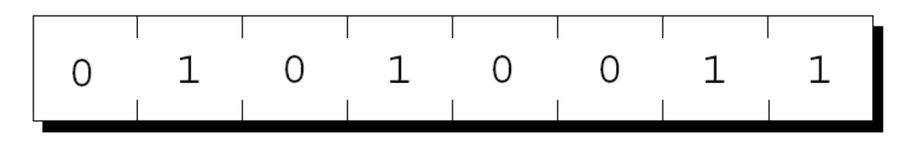
0 1 0 1 0 0 1 1이라는 여덟 개의 비트가 한 칸에 하나씩 들어가 있으며, 이것이 바이트 하나가 담을 수 있는 정보의 전부입니다. 이 그림의 요점은 메모리를 비트 단위가 아니라 바이트 단위로 끊어서 다룬다는 약속이며, 바로 다음 그림에서 이 바이트 하나하나에 번호(주소)가 붙게 됩니다.- 각 바이트는 고유한 주소(unique address)를 가집니다.
- \(n\)바이트 메모리의 배치에서 주소는 0부터 \(n-1\)까지의 범위를 갖습니다.
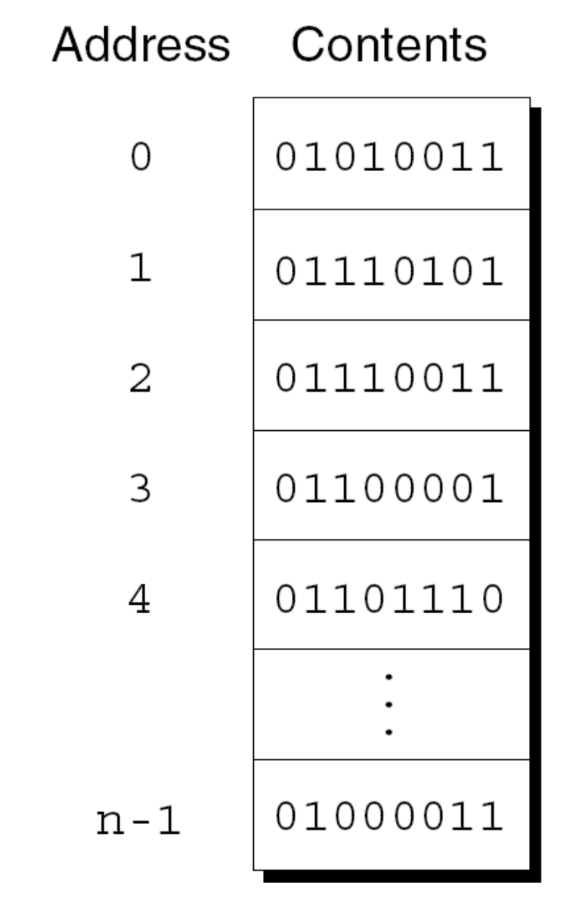
01010011, 01110101, 01110011, 01100001, 01101110, …, 01000011)을 보여 줍니다. 가운데의 세로 점 세 개는 생략된 중간 구간을 뜻합니다. 이 그림이 전달하는 핵심은 메모리가 “주소 → 내용”의 거대한 대응표라는 점이며, 포인터란 결국 이 표의 왼쪽 열에 있는 값 하나를 담아 두는 변수입니다.3.2 C 변수와 그 주소 (C Variable and its Address)
이제 이 바이트 배열 위에 C 변수를 얹어 보겠습니다.
- 각 변수는 하나 이상의 바이트를 차지합니다(occupies one or more bytes of memory).
- 첫 번째 바이트의 주소를 그 변수의 주소라고 부릅니다.
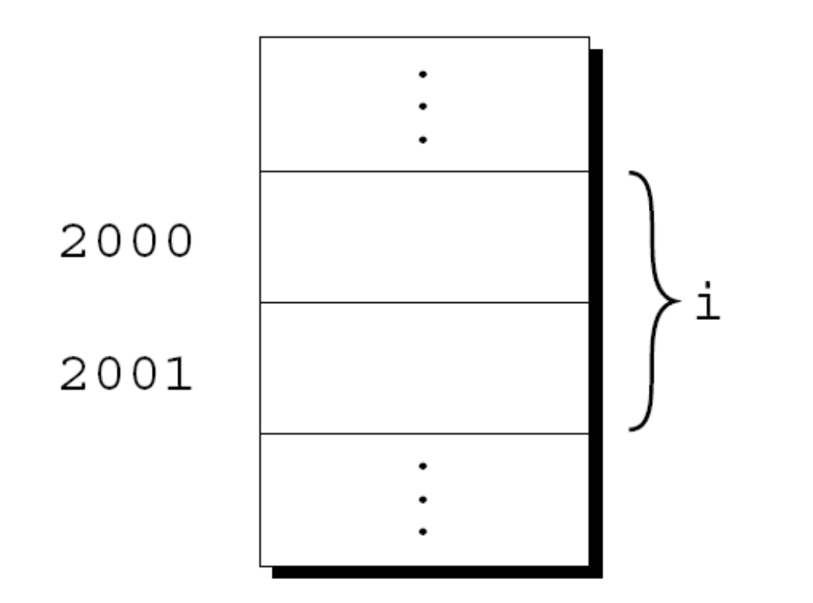
2000, 2001이라는 주소가 붙어 있습니다. 오른쪽의 중괄호 }가 이 두 칸을 하나로 묶어 i라는 이름을 달고 있는데, 이는 변수 i가 주소 2000과 2001 두 바이트에 걸쳐 저장되어 있다는 뜻입니다. 위아래의 세로 점 세 개는 그 앞뒤로도 메모리가 계속 이어짐을 나타냅니다. 이 그림의 핵심은 여러 바이트를 차지하더라도 변수의 주소는 언제나 “첫 바이트의 주소” 하나로 대표된다는 약속이며, 그래서 이 예시에서 i의 주소는 2001이 아니라 2000입니다.이 약속 덕분에 “변수의 주소”라는 말이 애매해지지 않습니다. 변수가 2바이트든 8바이트든 주소는 언제나 하나의 숫자이고, 몇 바이트를 읽을지는 타입이 따로 알려 줍니다.
4. 포인터 변수 (Pointer Variable)
4.1 포인터 변수란 무엇인가 (Pointer Variable)
주소를 담는 특별한 변수(a special variable that holds an address)입니다. 변수 i의 주소를 포인터 변수 p에 저장했을 때, 우리는 p가 i를 “가리킨다(points to)”고 말합니다.
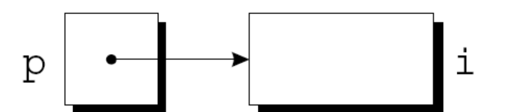
p이고, 그 안의 검은 점은 “이 변수에 담긴 값이 주소이다”를 뜻합니다. 그 점에서 출발한 화살표가 오른쪽의 큰 상자, 곧 변수 i를 가리킵니다. 즉 화살표는 실제 메모리에 존재하는 선이 아니라 p의 값이 i의 주소와 같다는 사실을 시각화한 것입니다. 앞으로 등장하는 모든 포인터 그림이 이 규약(상자 = 변수, 점 = 주소값, 화살표 = 가리킴)을 따릅니다.포인터 변수의 선언은 이름 앞에 별표(*)를 붙이는 방식입니다.
int *p;
float *q;- 이름 앞의 별표(
*)가 그 변수가 포인터임을 나타냅니다. p는int타입 데이터를 담고 있는 메모리를 가리킬 수 있습니다.q는float타입 데이터를 담고 있는 메모리를 가리킬 수 있습니다.
4.2 포인터 변수 선언하기 (Declaring Pointer Variables)
포인터 변수는 다른 변수들과 한 줄에 함께 선언할 수 있습니다.
int i, j, a[10], b[20], *p, *q;여기서 *는 타입이 아니라 각 이름에 개별적으로 붙는다는 점에 주의해야 합니다. 위 선언에서 i, j는 정수, a, b는 정수 배열, p, q만이 정수 포인터입니다.
모든 포인터 변수는 특정 타입을 저장하고 있는 메모리만 가리켜야 하며, 이 타입을 참조 타입(referenced type)이라고 부릅니다.
int *p; /* points only to integers */
double *q; /* points only to doubles */
char *r; /* points only to characters */참조 타입에는 아무런 제약이 없습니다(no restrictions on referenced types).
struct student *p; /* points to a struct type */
int **p; /* points to pointers to integers */
int (*p)[10]; /* points to integer array of size 10 */
int *p[10]; /* array of ten integer pointers */int (*p)[10];은 “정수 10개짜리 배열을 가리키는 포인터 하나”이고, int *p[10];은 “정수 포인터 10개짜리 배열”입니다. 괄호 하나로 의미가 뒤집히며, 이 규칙을 체계적으로 읽는 방법이 §14 복잡한 포인터 선언의 주제입니다. 지금은 “괄호가 최우선”이라는 사실만 기억해 두면 충분합니다.
5. 포인터 연산자: & 와 * (Pointer Operators: &, *)
포인터를 실제로 쓰기 위해 필요한 연산자는 단 둘뿐입니다.
| 연산자 | 이름 | 하는 일 |
|---|---|---|
& |
주소 연산자(address operator) | 변수의 주소를 찾아냅니다(to find the address of a variable) |
* |
간접 참조/역참조 연산자(indirection/dereference operator) | 포인터가 가리키는 곳의 데이터를 읽습니다(to read the data that a pointer points to) |
강의 자료는 여기에 한 줄 경고를 붙입니다 — 포인터 선언과 혼동하지 말 것(Don’t be confused with pointer declaration). 같은 * 기호가 선언문에서는 “이것은 포인터다”를, 수식에서는 “가리키는 곳을 열어라”를 뜻하기 때문입니다.
5.1 주소 연산자 & (The Address Operator)
포인터 변수를 선언했을 때 실제로 일어나는 일부터 정확히 해 두겠습니다.
- 포인터 값을 저장하기 위한 8바이트(64비트) 메모리가 할당됩니다.
- 그러나 선언만으로는 그 포인터가 메모리의 어디도 가리키지 않습니다(declaration doesn’t make it point to anywhere in the memory yet).
int *p; /* points nowhere in particular */- 따라서
p를 사용하기 전에 초기화하는 것이 결정적으로 중요합니다(crucial to initializepbefore using it).
& 연산자로 변수의 주소를 대입하면 비로소 p가 무언가를 가리키게 됩니다.
int i, *p;
...
p = &i; /* '&' returns the address of i */- 이 주소 대입(address assignment)이
p가i를 가리키도록 만듭니다.
선언과 동시에 초기화하는 것도 가능합니다.
int i;
int *p = &i;다만 선언 순서에 주의해야 합니다.
int i, *p = &i; /* valid if 'i' is declared before p */
int *p = &i, i; /* so, this is invalid */한 선언문 안에서도 이름은 왼쪽에서 오른쪽으로 차례로 도입되므로, &i를 쓰는 시점에 i가 이미 선언되어 있어야 합니다.
5.2 간접 참조 연산자 * (The Indirection Operator)
int i;
int *p = &i;
printf("%d\n", *p); /* prints out the value of i */두 연산자의 역할을 한 줄씩 대비하면 이렇게 됩니다.
&: 변수에 대한 포인터를 만들어 냅니다(produces a pointer to the variable).*: 그 메모리 주소에 저장된 값을 읽습니다(reads what’s stored in the memory address).
둘은 서로의 역연산이므로, 붙여 쓰면 상쇄됩니다.
j = *&i; /* same as j = i; */p가 i를 가리키고 있을 때 성립하는 두 사실이 이 절의 전부입니다.
*p는 i의 별명입니다
p가 i를 가리킬 때,
*p는i와 같은 값을 갖습니다(*phas the same value asi).*p의 값을 바꾸면i의 값이 바뀝니다(changing the value of*pchanges the value ofi).
즉 *p는 i의 복사본이 아니라 i 그 자체를 가리키는 또 하나의 이름입니다. 포인터가 강력한 이유도, 위험한 이유도 전부 이 한 줄에서 나옵니다.
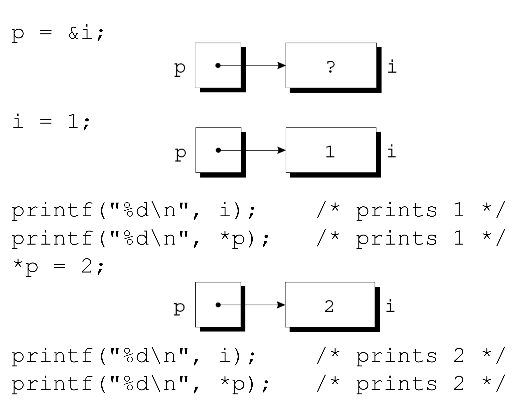
p와 i의 상태가 문장 하나마다 어떻게 변하는지를 코드와 그림을 나란히 놓아 추적한 그림입니다. 왼쪽에는 실행되는 코드가 위에서 아래로, 오른쪽에는 그 시점의 메모리 상태가 놓여 있습니다. 첫째 단계 p = &i; 이후 p 상자의 점에서 화살표가 i 상자로 이어지지만 i 안은 아직 ?, 즉 초기화되지 않은 쓰레기 값입니다. 둘째 단계 i = 1; 이후 i 상자의 내용이 1로 바뀌며, 화살표는 그대로입니다 — i에 직접 쓰든 p를 통해 쓰든 같은 상자를 건드리기 때문입니다. 이어지는 printf("%d\n", i);와 printf("%d\n", *p);가 둘 다 1을 출력한다는 주석이 그 사실을 확인해 줍니다. 셋째 단계 *p = 2;는 이번에는 포인터를 통해 쓰는 경우인데, i 상자의 내용이 2로 바뀌고 마지막 두 printf가 둘 다 2를 출력합니다. 즉 이 그림은 i와 *p가 완전히 대칭적으로 같은 저장 공간을 지시한다는 사실을, 읽기 방향과 쓰기 방향 양쪽에서 한 번씩 보여 줍니다.5.3 * 연산자의 위험한 사용 (Dangerous Usage of * Operator)
*를 적용하는 것은 위험합니다
int *p;
printf("%d", *p); /*** WRONG ***/
/* the following is even more dangerous */
*p = 1; /*** WRONG ***/읽는 쪽(*p)보다 쓰는 쪽(*p = 1)이 더 위험합니다. 읽기는 프로그램 자신만 잘못된 값을 얻고 끝날 수 있지만, 쓰기는 어딘지 모를 남의 메모리를 파괴하기 때문입니다.
왜 위험한지에 대한 강의의 답은 세 층으로 되어 있습니다.
- 논리적으로 틀린 문장입니다(it is a logically wrong statement).
p가 아직 아무것도 가리키지 않는데 “가리키는 곳”을 말하고 있으니, 문장 자체가 뜻을 이루지 못합니다. - 임의의 주소에서 값을 읽거나 쓰는 것은 운영체제가 금지합니다(prohibited by the operating system) — 이것이 보호(protection) 기능입니다.
- 운영체제는 오작동하는 프로그램을 정지시킵니다(stops a program that misbehaves).
강의 자료는 그 이유는 학기 뒤에 배운다(will learn the reasons later in the course)고 예고하며 넘어갑니다. 즉 지금은 “그런 규칙이 있다”로 받아들이고, 가상 메모리와 주소 공간을 배우는 시점에 다시 만나게 됩니다.
5.4 포인터 대입 (Pointer Assignment)
같은 타입의 포인터끼리는 서로 대입할 수 있습니다(a pointer can be assigned to another pointer of the same type).
int i, j, *p, *q;
p = &i;
q = p; /* p and q both point to i */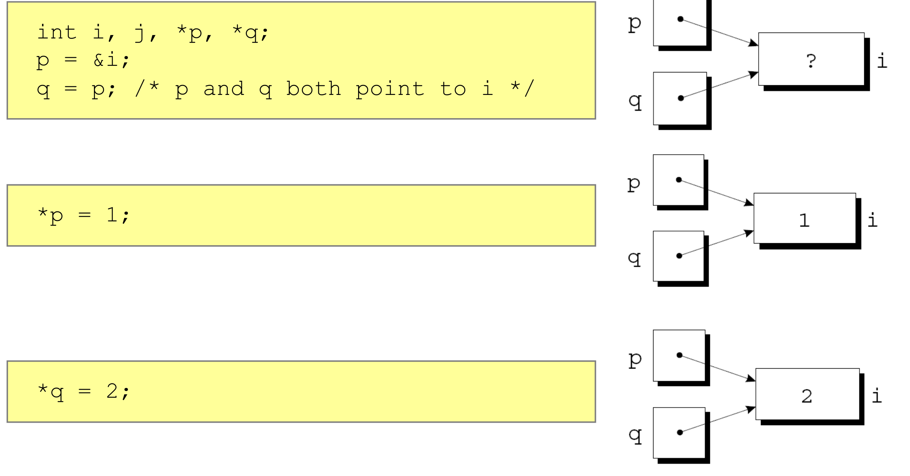
p = &i; 후 q = p;를 실행하면 p와 q 두 상자의 점에서 나온 화살표가 모두 같은 i 상자로 모이며, 이때 i의 내용은 아직 ?입니다. 둘째 단계 *p = 1;을 실행하면 i 상자가 1이 됩니다. 셋째 단계 *q = 2;를 실행하면 같은 i 상자가 2로 덮어써집니다. 여기서 결정적인 것은 q를 통해 쓴 값이 p가 보고 있던 값을 바꾸어 버렸다는 점입니다. 즉 이 그림은 여러 포인터가 같은 메모리 공간을 가리킬 수 있으며(any number of pointer variables may point to the same memory space), 그 결과 한쪽을 통한 쓰기가 다른 쪽에 그대로 보인다는 별칭(aliasing) 현상을 시각화합니다.여기서 강의는 학생들이 가장 많이 헷갈리는 지점을 정면으로 묻습니다.
q = p; 와 *q = *p; 는 얼마나 다른가
q = p;— 주소를 복사합니다. 대입 후q와p는 같은 곳을 가리키게 되고, 가리켜지던 두 변수의 값은 하나도 바뀌지 않습니다.*q = *p;— 값을 복사합니다.p와q는 각자 원래 가리키던 곳을 그대로 가리키고, 대신q가 가리키는 변수의 내용이p가 가리키는 변수의 내용으로 덮어써집니다.
한쪽은 화살표를 옮기고, 다른 쪽은 상자의 내용물을 옮깁니다.
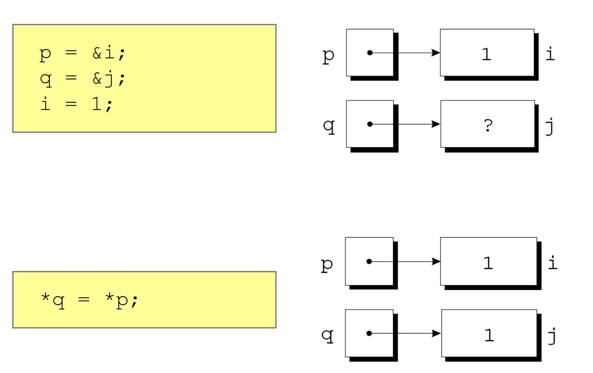
*q = *p;)의 경우를 두 단계로 추적한 그림입니다. 위쪽은 p = &i; q = &j; i = 1;을 실행한 직후로, p의 화살표는 값 1을 담은 i 상자를, q의 화살표는 아직 초기화되지 않아 ?인 j 상자를 각각 가리킵니다 — 두 화살표는 서로 다른 상자를 향하고 있습니다. 아래쪽은 *q = *p;를 실행한 뒤인데, 주목할 점은 화살표의 방향이 위쪽과 완전히 똑같이 유지된다는 것입니다. 바뀐 것은 오직 j 상자의 내용으로, ?가 1로 채워졌습니다. 앞 그림(q = p;)에서는 화살표가 움직이고 상자는 그대로였다면, 이 그림에서는 상자가 채워지고 화살표는 그대로입니다. 두 그림을 나란히 놓고 보는 것이 이 절의 요점입니다.6. 인자로서의 포인터 (Pointer as Argument)
포인터의 첫 번째 실전 용도는 함수가 호출자의 변수를 직접 고치게 만드는 것입니다. 우리가 이미 매일 쓰고 있는 scanf가 그 예입니다.
int i;
...
scanf("%d", &i);scanf는 인자로 포인터를 받습니다(takes pointers as arguments).&를 빼먹으면scanf에게i의 값이 전달됩니다(without&, value ofiis provided toscanf).
scanf가 "%d"를 만나면 하는 일을 두 단계로 쪼개 보면 왜 주소가 필요한지가 분명해집니다.
- 입력 문자열을 정수로 변환합니다(converts an input string to an integer).
- 그 결과를 전달받은 주소에 씁니다(writes it to the provided address).
쓸 곳의 주소를 모르면 두 번째 단계를 수행할 수 없습니다. i의 값(예컨대 쓰레기 값 12345)을 받아 봐야 scanf는 그것을 주소로 오해할 뿐입니다.
&를 붙여야 한다”는 다른 말입니다
인자가 포인터여야 한다는 것이지, &가 항상 필요하다는 뜻은 아닙니다(doesn’t mean & is always needed). 오히려 &를 쓰는 것이 틀린 경우도 있습니다.
int i, *p;
...
p = &i;
scanf("%d", p); /* 올바름: p는 이미 주소입니다 */
scanf("%d", &p); /** WRONG **/마지막 줄이 틀린 이유는 &p가 i의 주소가 아니라 포인터 변수 p 자신의 주소이기 때문입니다. 그 자리에 정수를 써 넣으면 i가 아니라 p가 망가집니다. 판단 기준은 단순합니다 — “scanf가 값을 써 넣어야 할 그 변수의 주소”가 넘어가는가만 확인하면 됩니다.
7. 반환값으로서의 포인터 (Pointers as Return Values)
함수는 포인터를 반환할 수 있습니다(functions are allowed to return pointers).
int *max(int *a, int *b)
{
return (*a > *b) ? a : b;
}int *p, i, j;
...
p = max(&i, &j);- 호출이 끝난 뒤
p는i또는j중 하나를 가리킵니다(after the call,ppoints to eitheriorj).
여기서 반환되는 것이 값이 아니라 주소라는 점이 핵심입니다. *a > *b로 값을 비교한 뒤 반환하는 것은 a 또는 b, 즉 주소입니다. 그래서 호출자는 “둘 중 큰 쪽”을 읽을 수 있을 뿐 아니라 그 변수를 고칠 수도 있습니다.
그런데 다음 함수는 무엇이 잘못되었을까요?
int *max(int a, int b)
{
return (a > b) ? &a : &b;
}int *p, i, j;
...
p = max(i, j);i와j는 함수의 지역 변수로 복사되어 전달됩니다(iandjare passed to local variables of the function). 즉 매개변수a,b는 호출자의i,j와 다른 저장 공간입니다.- 따라서 이 함수는 지역 변수의 메모리 주소를 반환하게 됩니다(function will return memory address of the local variable).
- 그런데 함수가 반환되는 순간 그 지역 변수의 메모리 영역은 해제됩니다(the memory area of the function local variable will be deallocated). 그 결과 반환된 주소는 쓰레기 값을 담고 있을 수 있습니다(returned memory address may hold garbage values).
앞의 올바른 버전과 비교하면 차이가 선명합니다. 올바른 버전이 반환한 a, b는 호출자의 변수 i, j를 가리키는 주소여서 함수가 끝나도 살아 있지만, 잘못된 버전이 반환한 &a, &b는 함수와 수명을 같이하는 지역 변수의 주소입니다.
8. 배열과 포인터의 관계 (Array and Pointer Relationship)
&a[i]는 배열a의 원소i를 가리키는 포인터입니다.- 배열 원소를 가리키는 포인터를 반환하는 것은 자주 유용합니다(often useful to return a pointer to an array element).
배열 a가 n개의 원소를 가진다고 할 때, 가운데 원소를 가리키는 포인터를 반환하는 함수는 다음과 같습니다.
int *find_middle(int a[], int n)
{
return &a[n/2];
}앞 절의 위험이 여기서는 발생하지 않는다는 점에 주목할 만합니다. a는 지역 배열이 아니라 호출자의 배열을 가리키는 포인터이므로(§11에서 다룹니다), &a[n/2]는 함수가 끝나도 유효합니다.
포인터를 통해 배열 원소에 접근하는 기본형은 다음과 같습니다.
int a[10], *p;
p = &a[0];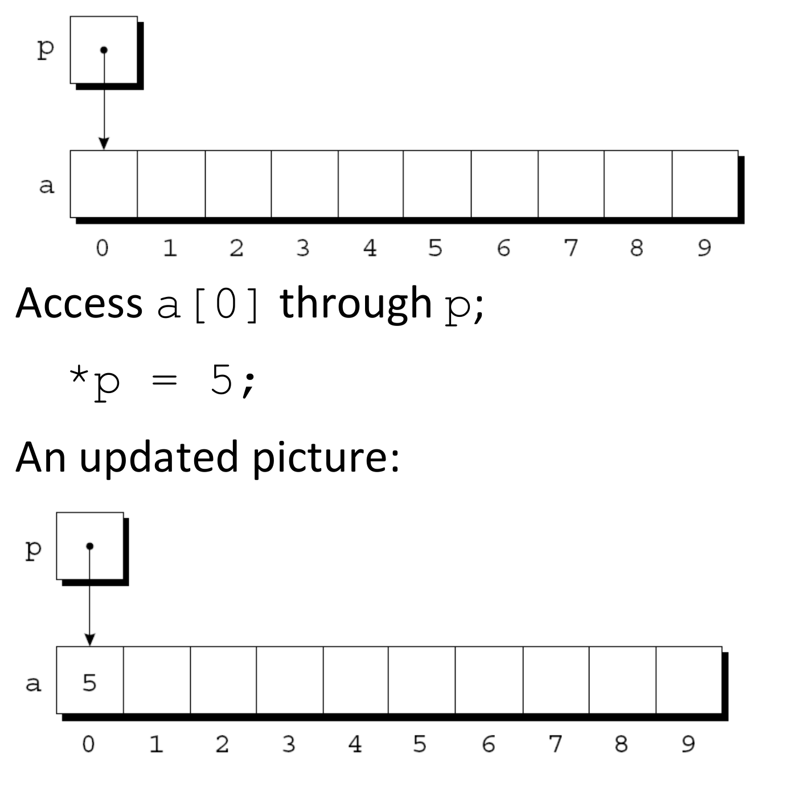
p = &a[0]; 직후의 상태로, 열 칸짜리 배열 a(칸 아래에 인덱스 0부터 9까지가 적혀 있습니다) 위에 포인터 상자 p가 놓이고, 그 점에서 아래로 향한 화살표가 정확히 0번 칸을 가리킵니다. 모든 칸은 아직 비어 있습니다. 아래쪽은 *p = 5;를 실행한 뒤의 “갱신된 그림(An updated picture)”으로, 화살표의 위치는 그대로인 채 0번 칸에만 값 5가 채워져 있습니다. 이 그림의 핵심은 a[0] = 5;라고 쓰는 것과 *p = 5;라고 쓰는 것이 완전히 같은 결과를 낳는다는 점이며, 인덱스 표기와 포인터 표기가 서로 다른 두 문법이 아니라 같은 동작의 두 표현임을 예고합니다.9. 포인터 산술 (Pointer Arithmetic)
포인터 산술(pointer arithmetic)은 포인터로 배열 원소에 접근하는 일을 단순하게 만들어 줍니다.
C가 지원하는 포인터 산술은 정확히 세 가지입니다.
- 포인터에 정수를 더하기(adding an integer to a pointer)
- 포인터에서 정수를 빼기(subtracting an integer from a pointer)
- 포인터에서 포인터를 빼기(subtracting one pointer from another)
포인터끼리 더하는 연산이 목록에 없다는 점을 눈여겨볼 만합니다. 주소 두 개를 더한 값은 어떤 의미도 갖지 않기 때문입니다.
9.1 포인터에 정수 더하기 (Adding an Integer to a Pointer)
p + j는 p가 가리키는 곳에서 j칸 뒤를 가리킵니다(p + j points to j places after the one p points to). 즉 p가 a[i]를 가리키면 p + j는 a[i+j]를 가리킵니다.
여기서 “칸”의 단위는 바이트가 아니라 원소입니다. int가 4바이트라면 p + 1은 주소값이 1이 아니라 4만큼 커집니다. §2에서 본 “포인터의 값은 타입 X의 시작 주소로 해석된다”는 규약이 여기서 실제로 쓰입니다.
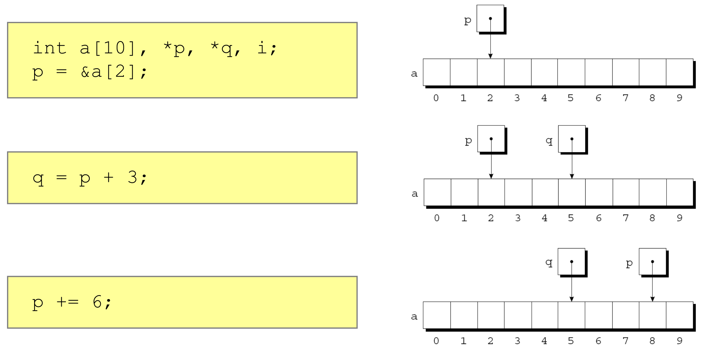
a는 열 칸이고 아래에 인덱스 0–9가 적혀 있습니다. 첫째 장면 int a[10], *p, *q, i; p = &a[2];에서는 p의 화살표가 2번 칸을 가리킵니다. 둘째 장면 q = p + 3;에서는 p가 그대로 2번 칸을 가리키는 채로 새 포인터 q가 5번 칸(= 2 + 3)을 가리킵니다 — p 자신은 전혀 움직이지 않았다는 점이 중요합니다. 셋째 장면 p += 6;에서는 이번에는 p 자신이 갱신되어 8번 칸(= 2 + 6)으로 이동하고, q는 앞서 정해진 5번 칸에 그대로 남아 있습니다. 즉 이 그림은 p + 3(새 값을 만들어 냄)과 p += 6(자기 자신을 옮김)의 차이를 같은 배열 위에서 대비시켜 보여 줍니다.9.2 포인터에서 정수 빼기 (Subtracting an Integer from a Pointer)
p가 a[i]를 가리키면 p - j는 a[i-j]를 가리킵니다. 더하기의 대칭입니다.
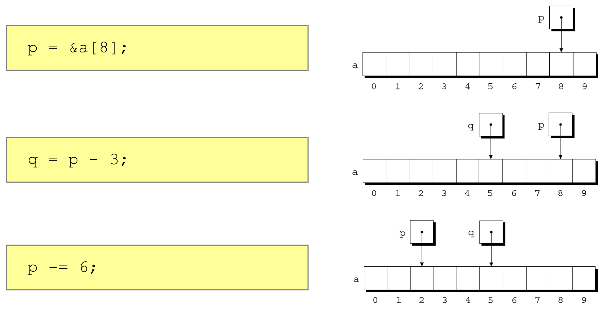
p = &a[8];에서 p의 화살표는 8번 칸을 가리킵니다. 둘째 장면 q = p - 3;에서 q가 5번 칸(= 8 − 3)을 가리키고 p는 8번 칸에 그대로 남습니다. 셋째 장면 p -= 6;에서는 p 자신이 2번 칸(= 8 − 6)으로 옮겨 가고 q는 5번 칸에 머뭅니다. 앞 그림과 나란히 놓고 보면 화살표가 오른쪽으로 가느냐 왼쪽으로 가느냐만 다를 뿐 구조가 완전히 같으며, 이는 포인터 산술이 인덱스 산술과 정확히 같은 대수를 따른다는 사실을 보여 줍니다.9.3 포인터끼리 빼기 (Subtracting One Pointer from Another)
앞의 두 연산이 “포인터 ± 정수 → 포인터”였다면, 이번 연산은 “포인터 − 포인터 → 정수”입니다.
- 결과는 두 포인터 사이의 거리이며, 단위는 배열 원소입니다(the distance measured in array elements).
p와q가 각각a[i]와a[j]를 가리키면p - q는i - j와 같습니다.
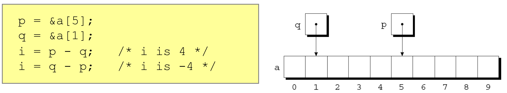
p = &a[5]; q = &a[1];로 두 포인터를 배열의 서로 다른 위치에 놓은 뒤 i = p - q;와 i = q - p;를 계산하며, 주석이 각각 /* i is 4 */와 /* i is -4 */라고 결과를 명시합니다. 오른쪽 그림에서는 열 칸짜리 배열 a 위에 q의 화살표가 1번 칸을, p의 화살표가 5번 칸을 가리키고 있어, 두 화살표 사이의 간격이 정확히 네 칸임을 눈으로 확인할 수 있습니다. 뺄셈의 순서를 뒤집으면 부호가 뒤집힌다는 점, 그리고 결과가 바이트 수(예: 16)가 아니라 원소 수(4)라는 점이 이 그림의 두 가지 요점입니다.- 배열 원소를 가리키지 않는 포인터로 포인터 산술을 수행하는 것(performing pointer arithmetic that doesn’t point to an array element)
- 두 포인터가 같은 배열의 원소를 가리키지 않는데 서로 빼는 것(subtracting pointers unless both point to elements of the same array)
“미정의 동작”은 틀린 값이 나온다는 뜻이 아니라 표준이 아무것도 보장하지 않는다는 뜻입니다. 잘 도는 것처럼 보이다가 컴파일러 옵션이나 플랫폼이 바뀌는 순간 무너질 수 있는 종류의 코드입니다.
9.4 포인터 비교 (Comparing Pointers)
- 관계 연산자와 동등 연산자로 포인터를 비교할 수 있습니다:
<,<=,>,>=,==,!= - 같은 배열의 원소를 가리키는 포인터끼리만 의미가 있습니다(meaningful only for pointers to elements of the same array).
- 결과는 두 원소의 상대적 위치에 따라 결정됩니다(outcome depends on the relative positions of the two elements).
p = &a[5];
q = &a[1];
/* What is the outcome of (p <= q)? → 0 */
/* What about (p >= q)? → 1 */p는 5번 칸, q는 1번 칸을 가리키므로 p가 뒤쪽에 있습니다. 따라서 p <= q는 거짓(0), p >= q는 참(1)입니다. 비교 연산이 주소값의 대소를 그대로 따르되, 그 대소가 배열 안에서의 앞뒤 순서와 일치한다는 점이 이 절의 요지입니다.
10. 배열 이름을 포인터로 사용하기 (Using an Array Name as a Pointer)
배열의 이름은 그 배열의 첫 번째 원소를 가리키는 포인터로 사용될 수 있습니다(the name of an array can be used as a pointer to the first element in the array).
int a[10];
*a = 7; /* stores 7 in a[0] */
*(a+1) = 12; /* stores 12 in a[1] */여기서 두 개의 항등식이 따라 나옵니다.
a+i는&a[i]와 같습니다.*(a+i)는a[i]와 같습니다.
즉 우리가 늘 쓰던 대괄호 표기 a[i]는 포인터 산술의 문법적 설탕(syntactic sugar)이었던 셈입니다.
그러나 배열 이름과 포인터 변수가 같은 것은 아닙니다. 강의 자료는 이 차이를 두 단계로 짚습니다.
a의 타입은 정수 10개짜리 배열(int[10])이지만, 대부분의 경우int *로 감쇠(decay)합니다.- 예외:
sizeof(),&, 초기화(int a[] = {1,2};) 등입니다.
배열 이름은 포인터 변수가 아니기 때문(array name is not a pointer variable)입니다.
while (*a != 0)
a++; /*** compile error ***/같은 일을 하려면 포인터 변수를 따로 두어야 합니다(use a pointer variable to do this).
int *p = a;
while (*p != 0)
p++;a는 “첫 원소의 주소를 값으로 갖는 변수”가 아니라 배열 그 자체의 이름이고, 수식에서 쓰일 때만 첫 원소의 주소로 감쇠할 뿐입니다. 값을 담고 있는 저장 공간이 아니므로 대입의 왼쪽에 놓일 수 없습니다.
11. 배열 인자 (Array Arguments)
배열 이름은 포인터로 전달됩니다(an array name is passed as a pointer).
int find_largest(int a[], int n)
{
int i, max;
max = a[0];
for (i = 1; i < n; i++)
if (a[i] > max)
max = a[i];
return max;
}int b[10];
int c = find_largest(b, 10)이 사실 하나에서 네 가지 결과(consequence)가 따라 나옵니다.
11.1 결과 1 — 배열 인자는 변경으로부터 보호되지 않는다
- 배열 인자는 그 원소가 바뀌는 것으로부터 보호되지 않습니다(an array argument isn’t protected against change in its element).
전달된 것이 복사본이 아니라 주소이므로, 함수가 a[i] = ...를 실행하면 호출자의 배열이 실제로 바뀝니다. 이를 막으려면 함수가 배열을 바꾸지 않아야 할 때 const를 사용합니다(use const if a function should not change the array).
int find_largest(const int a[], int n)
{
...
}- 이렇게 하면
a의 원소가 바뀌는 경우 컴파일러가 오류를 냅니다(compiler produces an error if any element ofais changed).
11.2 결과 2 — 전달 시간이 배열 크기와 무관하다
- 배열을 함수에 전달하는 데 걸리는 시간은 배열의 크기에 의존하지 않습니다(the time required to pass an array to a function doesn’t depend on the size of the array).
- 배열의 복사본이 만들어지지 않으므로 큰 배열을 넘기는 데 아무런 대가가 없습니다(there’s no penalty for passing a large array, since no copy of the array is made).
결과 1과 결과 2는 같은 사실의 양면입니다. 복사하지 않기 때문에 빠르고, 복사하지 않기 때문에 보호되지 않습니다.
11.3 결과 3 — 배열 매개변수는 포인터로 선언해도 된다
- 원한다면 배열 매개변수를 포인터로 선언할 수 있습니다(an array parameter can be declared as a pointer if desired).
int find_largest(int *a, int n)
{
...
}- 이는
int a[]로 선언하는 것과 동일합니다(identical to declaring asint a[]). - 다시 말해 매개변수 자리의
int a[]는int *a로 해석됩니다(int a[]is interpreted asint *a).
함수 매개변수로 쓰인 int a[]는 int *a와 같지만, 함수 안이나 파일 범위에서 선언된 int a[10];은 포인터가 아니라 진짜 배열입니다(§12에서 이어집니다). 같은 표기가 위치에 따라 다른 뜻을 갖는 지점이므로 주의가 필요합니다.
11.4 결과 4 — 배열의 “일부”를 넘길 수 있다
- 배열 매개변수를 갖는 함수에는 배열 “조각(slice)”, 즉 연속된 원소들의 나열을 넘길 수 있습니다(a function with an array parameter can be passed an array “slice” — a sequence of consecutive elements).
배열 b의 5번부터 14번 원소에 find_largest를 적용하는 예는 다음과 같습니다.
largest = find_largest(&b[5], 10);넘기는 것이 주소이므로 “어디서부터”를 &b[5]로, “몇 개를”을 10으로 각각 지정하면 그것이 곧 부분 배열이 됩니다. 배열을 잘라 새로 복사할 필요가 전혀 없습니다.
12. 배열 선언 vs. 포인터 선언 (Array Declaration vs. Pointer Declaration)
겉보기에 비슷한 두 선언이 실제로는 전혀 다른 일을 합니다. 각각에서 *a = 0;이 무슨 일을 하는지 물어보면 차이가 드러납니다.
int a[10];
*a = 0; /* What happens? */- 이 선언은 컴파일러가 정수 10개를 위한 공간을 확보하고, 첫 원소의 주소를
a에 할당하게 합니다(sets aside space for 10 integers and assigns the address of first element toa). - 따라서
*a = 0;은a[0]에 0을 저장합니다. 가리켜지는 공간이 실제로 존재하므로 안전합니다.
int *a;
*a = 0; /* What happens? */- 이 선언은 컴파일러가 포인터 변수를 위한 공간만 할당하게 합니다(allocates space for a pointer variable).
- 정수를 담을 공간은 어디에도 마련되지 않았고,
a의 값은 초기화되지 않은 쓰레기입니다. 따라서*a = 0;은 §5.3에서 본 바로 그 위험한 쓰기입니다.
int a[10];은 저장 공간 + 그것을 가리킬 이름을 한꺼번에 만듭니다. int *a;는 가리킬 이름만 만들고 저장 공간은 만들지 않습니다. 문법이 비슷하다고 해서 두 번째 코드에 저장 공간이 딸려 오지는 않으며, 그 공간은 다른 변수의 주소(a = &i;)로 얻거나 동적 할당으로 따로 마련해야 합니다.
13. 이중 포인터 (Double Pointer)
포인터도 변수이므로 주소를 가집니다. 그 주소를 담는 변수가 이중 포인터(double pointer)입니다.
int i, j;
int *p = &i, *q = &j;
int **k = &p;p,q는 각각i,j를 가리키는 정수 포인터입니다.k는p를 가리키는 포인터, 즉 “정수 포인터를 가리키는 포인터”입니다.
여기서 역참조를 몇 번 하느냐에 따라 도달하는 대상이 달라집니다. k는 p의 주소, *k는 p 자신, **k는 p가 가리키는 i입니다. 강의 자료는 이 층위를 헷갈리지 않는 훈련을 위해 다음 일곱 줄을 한 줄씩 실행하며 그림을 갱신합니다.
*p = 1; // i = 1;
*q = 2; // j = 2;
*k = q; // p = q;
k = &q; // k points to q
*k = &i; // q = &i;
*p = 3; // j = 3;
**k = 4; // i = 4;한 줄씩 따라가 보겠습니다.
*p = 1;—p가i를 가리키므로i가 1이 됩니다.*q = 2;—q가j를 가리키므로j가 2가 됩니다.*k = q;—k가p를 가리키므로*k는 곧p자신입니다. 따라서 이 문장은p = q;와 같고,p가j를 가리키게 바뀝니다. 이제p와q가 둘 다j를 가리킵니다.k = &q;— 이번에는k자신을 바꿉니다.k가q를 가리키게 됩니다.*k = &i;—k가 이제q를 가리키므로*k는q자신입니다. 따라서q = &i;와 같고,q가i를 가리키게 됩니다.*p = 3;—p는 세 번째 줄에서j를 가리키게 되었으므로,j가 3이 됩니다. (i가 아닙니다.)**k = 4;—*k는q이고**k는q가 가리키는 곳, 즉i입니다. 따라서i가 4가 됩니다.
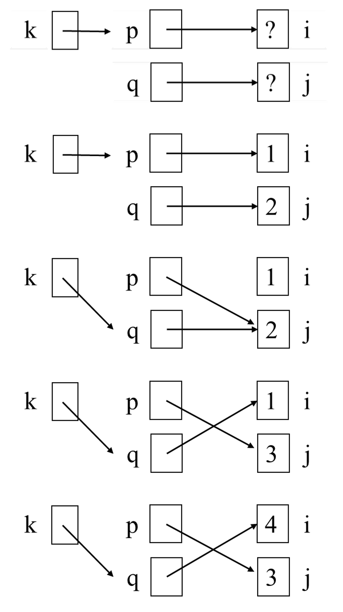
k, p, q, i, j 다섯 변수의 관계가 어떻게 변하는지를 위에서 아래로 다섯 단계에 걸쳐 그린 그림입니다. 각 단계에서 왼쪽 상자가 k, 가운데 두 상자가 p와 q, 오른쪽 두 상자가 i와 j이며, 상자 안의 숫자가 그 시점의 값, 화살표가 “가리킴”입니다. 1단계(초기 상태)에서는 k→p, p→i, q→j이고 i, j 모두 ?입니다. 2단계(*p = 1; *q = 2; 이후)에서는 화살표는 그대로인 채 i가 1, j가 2로 채워집니다. 3단계(*k = q; k = &q; 이후)에서는 두 화살표가 동시에 움직여 k의 화살표가 아래쪽 q로 꺾이고, p의 화살표도 i를 떠나 j(값 2)로 내려가 p와 q가 같은 상자를 가리킵니다. 4단계(*k = &i; *p = 3; 이후)에서는 p와 q의 화살표가 서로 교차(cross)하여 p→j, q→i가 되고, p를 통해 쓴 값 때문에 j가 3으로 바뀝니다. 5단계(**k = 4; 이후)에서는 교차한 화살표 모양이 그대로 유지된 채 i만 4로 바뀝니다. 3단계에서 화살표가 꺾이고 4단계에서 교차하는 이 두 장면이, *k가 가리키는 대상이 p에서 q로 옮겨 간 순간 같은 문장이 전혀 다른 변수를 건드리게 된다는 이 절의 핵심을 시각적으로 보여 줍니다.* 하나를 붙일 때마다 화살표를 한 번 따라간다고 생각하면 헷갈리지 않습니다. k는 화살표를 0번 따라간 것(= p의 주소), *k는 1번 따라간 것(= p), **k는 2번 따라간 것(= i)입니다. 그리고 대입문에서는 왼쪽 항이 “몇 번 따라간 자리”인지만 정확히 세면, 그 자리에 오른쪽 값이 들어간다는 규칙 하나로 전부 설명됩니다.
14. 복잡한 포인터 선언 (Complex Pointer Declarations)
int *(*p)[10]; 같은 선언을 읽어 내려면 우선순위 규칙이 필요합니다.
- 규칙:
[]와()가*보다 우선하지만, 괄호가 가장 높은 우선순위를 갖습니다([],()takes precedence over*, but parenthesis has the highest priority). - 전략: 식별자에서 시작해 안에서 바깥으로 읽어 나갑니다(start with identifier, from inside to outside).
강의 자료는 참고 자료로 https://cseweb.ucsd.edu/~ricko/rt_lt.rule.html를 함께 제시합니다.
이 전략을 적용한 예시들은 다음과 같습니다.
int *p[10];
// p is an array([]) of 10 int pointers
int (*p)[10];
// p is a pointer (*) to array of 10 integers
int *(*p)[10];
// p is a pointer (*) to array of 10 int pointers
int (*pf)(void);
// pf is a pointer to a function returning int
int *pf(void);
// pf is a function that returns int pointer (int *)
int (*pf[10])(void);
// pf is an array of 10 pointers to function returning int
int pf[](void);
// pf is an array of functions that returns an int (ILLEGAL)읽는 순서를 첫 두 줄로 확인해 보겠습니다.
int *p[10];— 식별자p에서 출발합니다.p오른쪽에[10]이 있고[]가*보다 우선하므로 먼저 “10개짜리 배열”입니다. 그다음 바깥의*를 만나 “int 포인터의” 배열, 최종적으로int포인터 10개짜리 배열이 됩니다.int (*p)[10];— 이번에는p가 괄호로 묶여 있습니다. 괄호가 최우선이므로 먼저*p, 즉 “포인터”로 읽습니다. 그다음 바깥의[10]을 만나 “정수 10개짜리 배열을 가리키는” 포인터가 됩니다.
마지막 줄이 불법(ILLEGAL)인 이유도 같은 방식으로 설명됩니다. C에서 함수를 배열의 원소로 둘 수는 없습니다. 함수 자체는 값처럼 복사되어 저장될 수 있는 대상이 아니기 때문이며, 그래서 실무에서 쓰는 것은 언제나 그 위의 int (*pf[10])(void);, 즉 함수 포인터의 배열입니다.
15. 포인터 연습문제 (Pointer Exercise)
강의 자료는 이 절을 다음 두 문장으로 엽니다.
- 포인터는 C 프로그래밍에서 효율적이고 필수적인 도구입니다(pointers is an efficient and essential tool in C programming).
- 그러나 매우 혼란스러울 수 있습니다 — 오직 연습만이 완벽을 만듭니다(but can be very confusing – only practice makes perfect!).
15.1 문제 (Pointer Exercise)
세 가지 선언 int A1[3], int *A2[3], int (*A3)[3] 각각에 대해, An / *An / **An 세 표현식이 ① 컴파일되는가(Y/N) ② 접근 시 런타임 오류 가능성이 있는가(Y/N) ③ sizeof()의 값은 얼마인가를 채워 넣는 문제입니다. 여기서 * 표시는 “문법적 오류가 없다면 컴파일된다”는 뜻(* means compiles if there is no grammatical error)입니다.
An 컴파일 |
An 런타임 오류 |
sizeof(An) |
*An 컴파일 |
*An 런타임 오류 |
sizeof(*An) |
**An 컴파일 |
**An 런타임 오류 |
sizeof(**An) |
|
|---|---|---|---|---|---|---|---|---|---|
int A1[3] |
|||||||||
int *A2[3] |
|||||||||
int (*A3)[3] |
15.2 해답 (Pointer Exercise Solution)
An 컴파일 |
An 런타임 오류 |
sizeof(An) |
*An 컴파일 |
*An 런타임 오류 |
sizeof(*An) |
**An 컴파일 |
**An 런타임 오류 |
sizeof(**An) |
|
|---|---|---|---|---|---|---|---|---|---|
int A1[3] |
Y | N | 12 | Y | N | 4 | N | N/A | N/A |
int *A2[3] |
Y | N | 24 | Y | N | 8 | Y | Y | 4 |
int (*A3)[3] |
Y | N | 8 | Y | Y | 12 | Y | Y | 4 |
각 행이 무엇을 뜻하는지는 역참조를 한 번씩 벗겨 낼 때 무엇이 남는가로 읽으면 정리됩니다.
int A1[3]: 정수 세 개짜리 배열 ➔*A1:A1[0]➔**A1: N/Aint *A2[3]: 정수를 가리키는 포인터 세 개짜리 배열 ➔*A2:A2[0]➔**A2: 첫 번째 포인터 원소(A2[0])가 가리키는 정수 값int (*A3)[3]: 정수 3개짜리 배열을 가리키는 포인터 ➔*A3: 정수 세 개짜리 배열 ➔**A3:A3[0]
sizeof 값들도 같은 방식으로 확인됩니다. 포인터는 §5.1에서 본 대로 8바이트, int는 4바이트라고 두면 됩니다.
A1은int3개이므로 \(4 \times 3 = 12\),*A1은int하나이므로 4입니다.A1은 배열이지 포인터가 아니므로**A1은 아예 컴파일되지 않습니다(그래서 뒤의 두 칸이 N/A입니다).A2는 포인터 3개이므로 \(8 \times 3 = 24\),*A2는 포인터 하나이므로 8,**A2는int이므로 4입니다.A3은 포인터 하나이므로 8,*A3은int3개짜리 배열이므로 12,**A3은int이므로 4입니다.
런타임 오류 열도 같은 논리로 읽힙니다. 아직 아무것도 가리키지 않는 포인터를 역참조하는 칸에만 Y가 붙습니다. A2의 **A2는 A2[0]이라는 초기화되지 않은 포인터를 한 번 더 따라가야 하므로 위험하고, A3은 그 자신이 초기화되지 않은 포인터이므로 *A3부터 이미 위험합니다. 반면 A1은 실제 저장 공간을 가진 배열이라 A1, *A1 모두 안전합니다.
마지막으로 강의 자료는 int (*A3)[3] 타입을 실제로 다루는 코드 조각을 제시합니다.
int A[3] = {1, 2, 3}, B[3] = {4, 5, 6};
int (*A3)[3], (*B3)[3], *pA;
A3 = &A;
B3 = &B;
*A3 = *B3; // compile error as it's the same as A = B
**A3 = **B3; // fine, same as A[0] = B[0]
pA = *A3; // fine, same as pA = A;*A3 = *B3;가 컴파일 오류인 이유:*A3과*B3은 각각 배열A와B자체이므로 이 문장은A = B;와 같습니다. §10에서 본 대로 배열 이름은 대입의 왼쪽에 올 수 없습니다.**A3 = **B3;가 괜찮은 이유: 한 겹 더 벗기면 각각A[0],B[0]이라는 평범한int변수이므로A[0] = B[0];와 같습니다.pA = *A3;가 괜찮은 이유:*A3은 배열A이고, 수식에서 쓰인 배열 이름은 첫 원소의 주소로 감쇠하므로pA = A;, 즉pA = &A[0];와 같습니다. 읽는 쪽에서는 감쇠가 일어나고 쓰는 쪽(대입의 왼쪽)에서는 허용되지 않는다는 §10의 비대칭이 여기서 다시 확인됩니다.
16. 요약 (Summary)
강의가 스스로 정리한 내용은 다음과 같습니다.
- 포인터와 그 연산(Pointers and their operations)
- 포인터는 메모리 주소를 값으로 갖습니다(pointer has a memory address as its value).
&는 주소 연산자입니다(&is address operator).*는 간접 참조/역참조 연산자입니다(*is indirection/dereference operator).- 함수 인자로서의 포인터(Pointers as function arguments)
- 전형적으로 전달된 변수의 값을 바꾸기 위해 사용됩니다(typically used to change the value of the passed variable).
- 참조에 의한 호출(call-by-reference) 의미론을 구현합니다.
- 배열과의 관계(Relation to the arrays)
- 배열 이름은 첫 원소의 주소가 대입된 포인터처럼 사용될 수 있습니다(array name can be used as a pointer assigned with the address of its first element).
정리하며 (Closing Remarks)
이번 강의의 논증 사슬을 단계별로 압축하면 다음과 같습니다.
| 단계 | 내용 | 근거 |
|---|---|---|
| ① 변수의 해부 | 변수는 이름 · 값 · 주소로 이루어져 있다 | A Close Look at C Variable |
| ② 주소의 정의 | 메모리는 바이트 단위로 나뉘고 각 바이트에 고유 번호가 있으며, 변수의 주소는 첫 바이트의 주소다 | Memory and Address |
| ③ 포인터의 정의 | 주소를 값으로 갖는 변수가 포인터이고, 그 값은 참조 타입의 시작 주소로 해석된다 | Pointer Variable |
| ④ 두 연산자 | &로 주소를 만들고 *로 그 주소를 연다 — *p는 i의 별명이 된다 |
Pointer Operators &, * |
| ⑤ 위험의 근원 | 별명이 성립하려면 가리켜지는 공간이 실재해야 한다. 초기화되지 않은 포인터의 역참조는 OS가 차단한다 | Dangerous Usage of * |
| ⑥ 첫 번째 응용 | 주소를 넘기면 함수가 호출자의 변수를 고칠 수 있다 (call-by-reference) | Pointer as Argument, scanf |
| ⑦ 응용의 한계 | 단, 지역 변수의 주소는 함수가 끝나면 무효가 된다 | Pointers as Return Values |
| ⑧ 배열과의 동치 | 배열 이름은 첫 원소의 주소로 감쇠하므로 a[i]와 *(a+i)는 같다 |
Using an Array Name as a Pointer |
| ⑨ 산술의 단위 | 포인터 ± 정수는 바이트가 아니라 원소 단위로 움직이고, 포인터 − 포인터는 원소 개수를 준다 | Pointer Arithmetic |
| ⑩ 인자 전달의 귀결 | 배열이 주소로 전달되므로 빠르지만 보호되지 않으며, 그래서 const와 슬라이스 전달이 함께 따라온다 |
Array Arguments (결과 1–4) |
| ⑪ 층위의 일반화 | 포인터도 주소를 가지므로 **k가 가능하고, *의 개수는 화살표를 따라가는 횟수다 |
Double Pointer |
| ⑫ 선언의 해독 | 괄호 > []·() > * 순으로, 식별자에서 안에서 바깥으로 읽는다 |
Complex Pointer Declarations |
개인적인 감상 몇 가지를 덧붙입니다.
- 가장 인상적인 지점은 이 강의가 포인터를 새로운 개념으로 도입하지 않는다는 설계입니다. 3번 슬라이드에서 “변수에는 이름과 값 말고 주소도 있다”고 한 줄 덧붙인 것이 전부이고, 나머지 37장은 그 세 번째 요소를 프로그램이 직접 만질 수 있게 되면 무슨 일이 벌어지는가를 문맥별로 전개할 뿐입니다. 포인터를 “어렵고 특별한 무언가”로 소개하는 자료들과 대비되는 지점이며, 실제로 이 관점을 잡고 나면
&와*는 세 번째 요소를 꺼내고 되돌리는 한 쌍의 변환으로만 남습니다. - 위험을 설명하는 방식도 인상적입니다. “초기화되지 않은 포인터를 쓰지 마라”는 규칙으로 끝내지 않고, 논리적 오류 → 운영체제의 보호 → 프로세스 강제 종료라는 세 층으로 나누어 설명한 뒤 “그 이유는 학기 뒤에 배운다”고 예고합니다. 즉 이 슬라이드는 답을 주는 대신 가상 메모리 강의로 향하는 갈고리를 걸어 두고 있으며, 시스템 프로그래밍 과목의 도입부다운 선택이라고 느꼈습니다.
- 배열 인자의 네 가지 결과(§11)를 하나의 원인에서 유도한 구성이 이 강의에서 가장 밀도 높은 대목입니다. “배열은 포인터로 전달된다”는 단 하나의 사실에서 보호되지 않음 · 크기와 무관한 전달 비용 · 포인터 선언과의 동치 · 슬라이스 전달이 전부 따라 나옵니다. 특히 결과 1과 결과 2가 같은 사실의 장점과 단점이라는 점이 좋았습니다.
const가 왜 장식이 아니라 필요한 안전장치인지도 이 구조 안에서 자연스럽게 설명됩니다. - 아쉬운 지점도 있습니다.
int a[]와int *a의 관계가 매개변수 자리에서만 동치라는 사실이 §11.3(결과 3)과 §12(배열 선언 vs. 포인터 선언)에 나뉘어 등장하는데, 두 슬라이드 사이에 명시적인 연결이 없습니다. 실제로 초심자가 가장 많이 저지르는 오해 — “int a[10];도 결국 포인터겠지” — 가 정확히 이 틈에서 생겨납니다. 두 슬라이드를 나란히 놓고 “매개변수에서는 같고 선언에서는 다르다”를 한 문장으로 못박았다면 더 좋았을 것 같아, 이 포스트에서는 §11.3에 그 취지의 주의를 따로 달아 두었습니다. - 연습문제(§15)의 설계는 다시 보아도 잘 만들어져 있습니다. 세 선언 × 세 표현식이라는 9칸짜리 격자에, 컴파일 가능성 · 런타임 위험 ·
sizeof라는 서로 다른 층위의 질문을 동시에 던집니다. 그 결과 “**A1은 컴파일조차 안 되고”, “*A3은 컴파일은 되지만 실행이 위험하며”, “sizeof(*A3)은 12지만sizeof(A3)은 8”이라는 세 종류의 오해가 한 표 안에서 한꺼번에 교정됩니다. 강의가 “연습만이 완벽을 만든다”고 적어 둔 것이 빈말이 아니라, 실제로 이 표를 스스로 채워 보는 것과 해답을 읽는 것 사이의 차이가 꽤 크리라고 생각합니다.